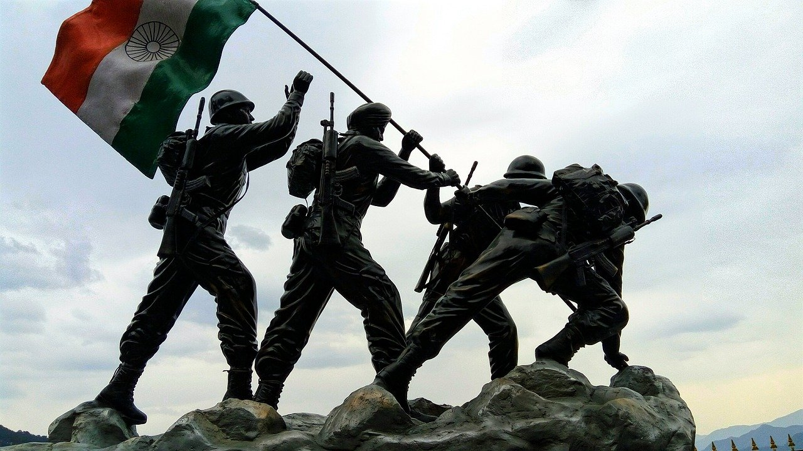

Independence Day of India, 15 August 2021: History, Significance, Facts and
Celebration

India gained independence from British rule on August 15, 1947. As India freed herself
from the clutches of the British
empire, the whole country roared in happiness, marking the reign of an independent and
free land, away from the terror
rule of the 200-year British rule.
Fearless Patriots led the freedom struggle which went on to be written within the deep
trenches of history. On the occasion of this patriotic day, let’s know more about the
history, significance, facts, and how this day is celebrated in India and across the
world.
History of India’s Independence Day
Jawaharlal Nehru declared India’s independence on August 15, 1947, and swore in as the
1st Indian Prime Minister. The British House of Commons passed the Indian Independence
Bill on July 4, 1947, and it was passed within a fortnight. This was a major part of the
process that led India to her victory. Freedom fighters and patriots like Mohandas
Karamchand Gandhi, Netaji Subhash Chandra Bose, Bhagat Singh, Rani Lakshmi Bai, and many
more lead the common people with their belief and determination to win independence.
Significance of India's Independence Day
This day is a remembrance and dedication to all those people who gave their lives, mind,
body, and soul to free India. Countless lives were lost and many were tortured but with
immense determination and faith, Indian rose as a free country. On this day, India’s
tricolour flag was hoisted above the Lahori Gate of Red Fort in Delhi on August 15,
1947. To this day, every year the Prime Minister hoists the flag and commemorates the
occasion by a traditional ceremony in Delhi, India’s capital. After the Prime Minister
addresses the nation, a military parade is held that is broadcasted all over the
country. The President also delivers a speech.
Facts about India's Independence Day
- Jawaharlal Nehru’s first speech on Independence Day began with, “At the
stroke of midnight, when the world sleeps, India shall awake to life and
freedom...”
- Rabindranath Tagore composed ‘Bharoto Bhagyo Bidhata’ which then later was
renamed ‘Jana Gana Mana’ and was adopted as the national anthem by the
Constituent Assembly of India.
- The Indian flag is only manufactured and supplied from The Karnataka Khadi
Gramodyoga Samyukta Sangha (KKGSS), located in Dharwad in Karnataka. It has
the sole authority to manufacture and supply the Indian national flag and
the flag is hand-spun and handwoven cotton khadi wafting.